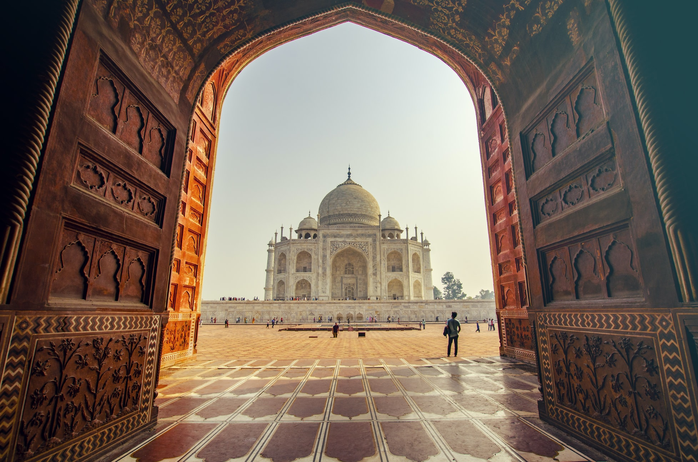
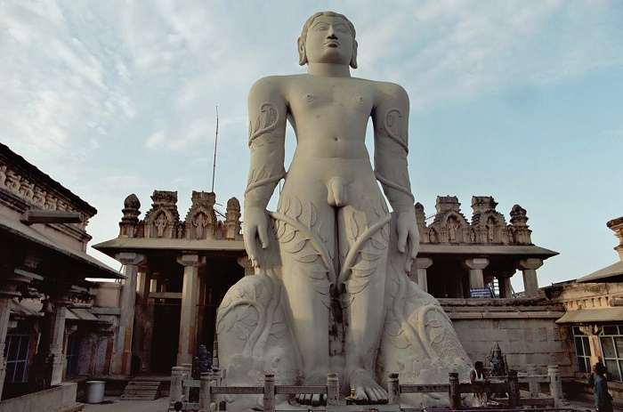
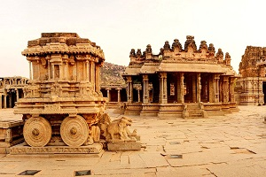
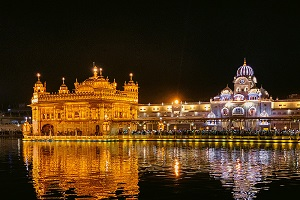
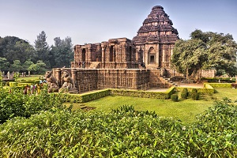
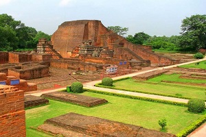
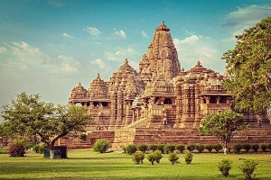

This ivory white marble structure that symbolizes love of the Emperor Shah Jehan to his beloved third wife – Mumtaz Mahal
It took over two decades and 20,000 talented artisans to complete this massive structure
including marble stone and other precious stones, gardens, etc.
It colors during the day as the sun light changes from morning to evening.

This is the tallest monolithic statue in the world, that measures 57 feet in height is carved from a single rock stone built in 983 C.E. dedicated to Bahubali,
the Jain God.
It is so tall that it can be seen from 30 km away. The construction of the statue was commissioned by the Ganga dynasty minister and commander, Chavundaraya.

Hampi or Hampe, also referred to as the Group of Monuments at Hampi.
It was the capital of the Vijayanagara Empire in the 14th century.
By 1500 CE, it was the world's second-largest medieval-era city and probably India's richest at that time.
Its capital was conquered, pillaged and destroyed by sultanate armies in 1565, after which Hampi remained in ruins.

The Golden Temple(also known as Harmandir Sahib) or Darbār Sahib, meaning "exalted court" is a gurdwara located in the city of Amritsar.
The gurdwara is built around a man-made pool (sarovar) that was completed by the fourth Sikh Guru, Guru Ram Das, in 1577.
The Golden Temple is an open house of worship for all people, from all walks of life and faiths.

Konark Sun Temple is a 13th-century CE (year 1250).The temple is attributed to king Narasimhadeva I of the Eastern Ganga Dynasty.
Dedicated to the Hindu Sun God Surya, what remains of the temple complex has the appearance of a 100-foot (30 m) high chariot with immense wheels and horses,
all carved from stone.

Nalanda University is an international and research-intensive university in Rajgir.
This Buddhist monastery and learning center for spiritual studies dates back to the seventh century.
The Mahavihara was the famed learning center during the
time of 7th century AD to 12th century AD and is known as one of the earliest education centers/universities in the world.

The Khajuraho Group of Monuments are a group of Hindu and Jain temples in Chhatarpur.
These monuments were constructed between 950-1050 AD by the Chandela Dynasty, these temples depict various forms
like meditation, spiritual teachings, kinship, wrestling, royalty and most significantly, erotic art.
It consist of stunning displays of sculptures and exceptional architectural skill.